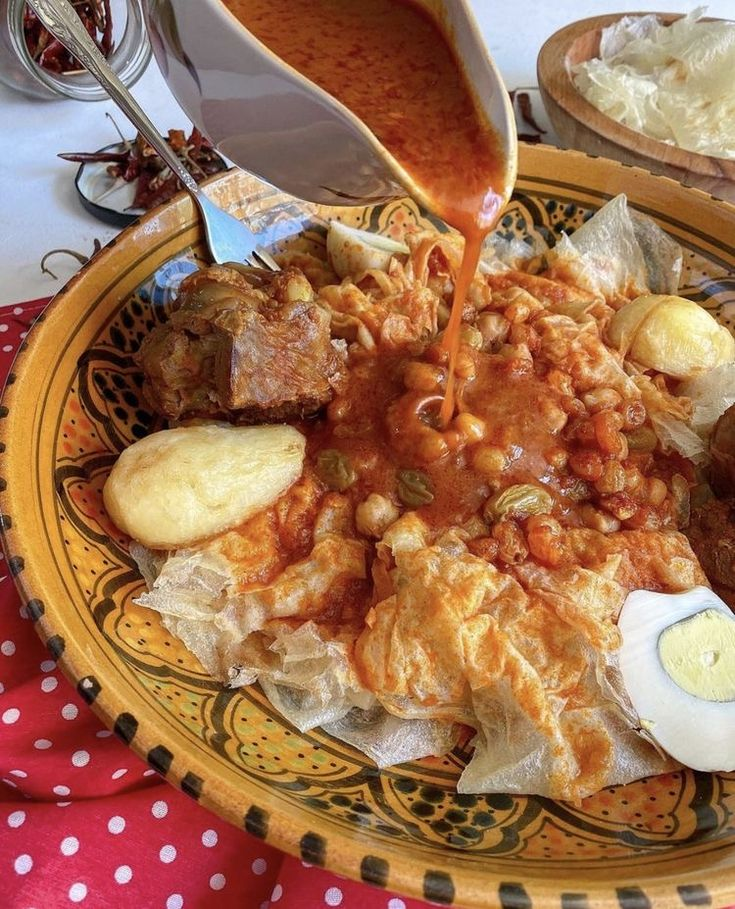

chekhchoukha

description
Chekhchoukha is a traditional Algerian dish from eastern Algeria (like Biskra & Setif). It features torn pieces of thin, cooked flatbread (rougag) mixed with a rich, spicy meat and vegetable sauce.
ingrdiants
for the rougag(flatbread):
2 cups semolina
Water (to form a dough)
Pinch of salt
for the sauce
- 500g lamb or beef
2 onions, chopped
2 tomatoes, grated
Chickpeas (optional)
Garlic, minced
Spices: paprika, ras el hanout, black pepper, salt
Olive oil
steps
- Make the rougag:
- Mix semolina, salt, and water to form a soft dough.
- Divide into balls, roll into thin rounds, cook on a hot plate or pan without oil.
- Tear the cooked flatbread into small pieces.
- Make the sauce:
- In a pot, sauté onions & garlic in oil.
- Add meat, spices, chickpeas, and tomatoes.
- Cover with water and cook until meat is tender.
- Assemble:
- Place the torn rougag pieces in a large dish, pour the hot sauce over, mix well, and let it soak.
Home